Develop Timetable module in LearniCo
Goal
The goal was to verify & identify the need for developing timetable module. If need exists,
we were going to develop the timetable feature that allowed teachers to schedule lectures
and enabled students to attend it from their LearniCo Student mobile app.
RESEARCH
We (The project manager and myself) conducted qualitative research with 6 teachers & 5
students from various educational institutions to empathise with their current situation and
problems related to scheduling & maintenance of timetable.
Research questions asked to Teachers
- How many lectures do you conduct on a daily basis?
- How do you schedule lectures/ which tool do you use often?
- In what way do you share lecture timings with students?
- How do you come to know about modifications in lectures and how do you go about managing them?
- What is the frequency of changes in timetable in a semester?
- Do all students come to know about the modification; do they join classes timely?
- Can you explain the last time when you had difficulty managing timetable of a class, if you can recall the scenario
- How often do you see the lecture slots of a class/ how often do you feel the need?
- How much time does it take to modify timetable if it is changed
Research questions asked to Students
- Tell us about your current learning routine
- In what manner do you get updates on lecture/ which tool do you use?
- How do you come to know about modifications in lectures
- What is the frequency of changes in timetable?
- Do all students come to know about the modification; do they join classes timely ?
- Can you explain the last time when you had difficulty regarding updates with timetable?
- What is the 1 thing you would like to change/ not change, in the current way of timetables
Teacher Persona
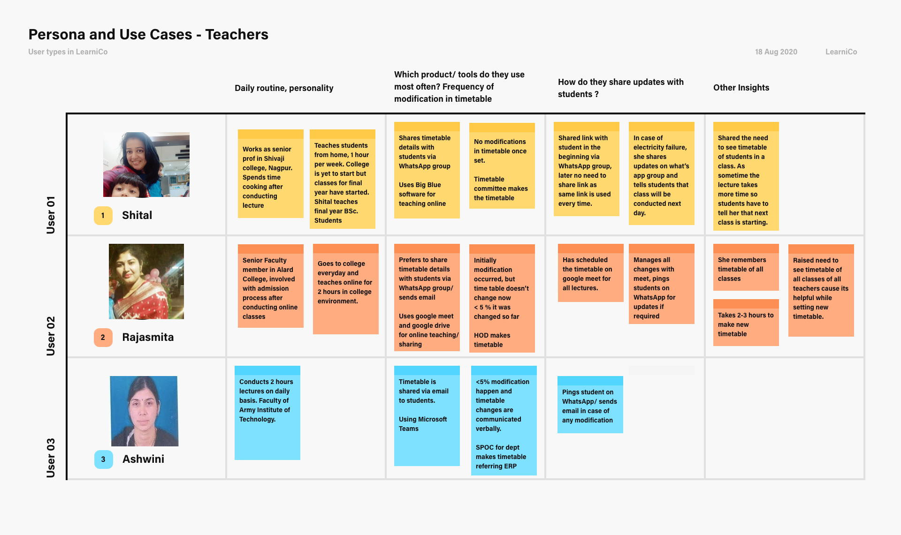
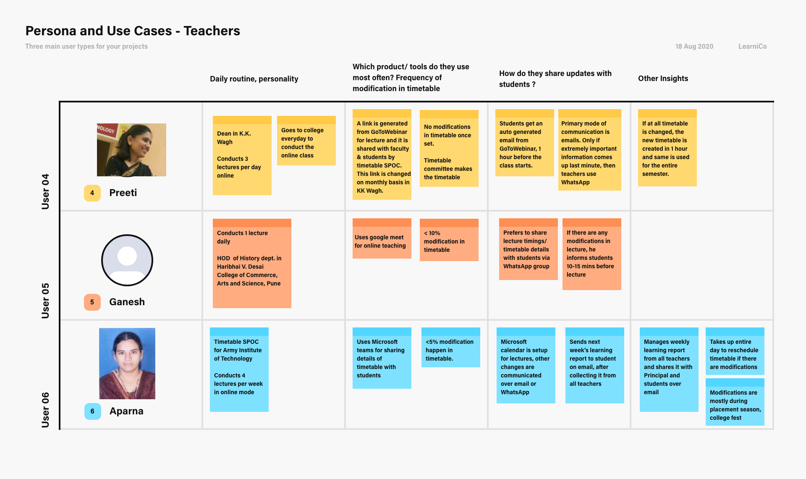
{kind=link}
{kind=link}
Student Persona
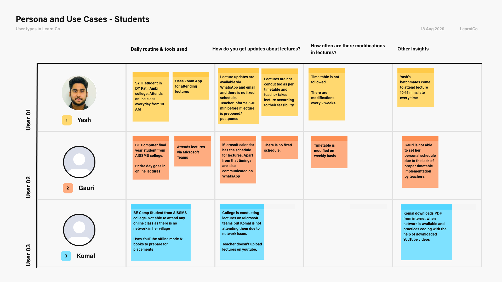
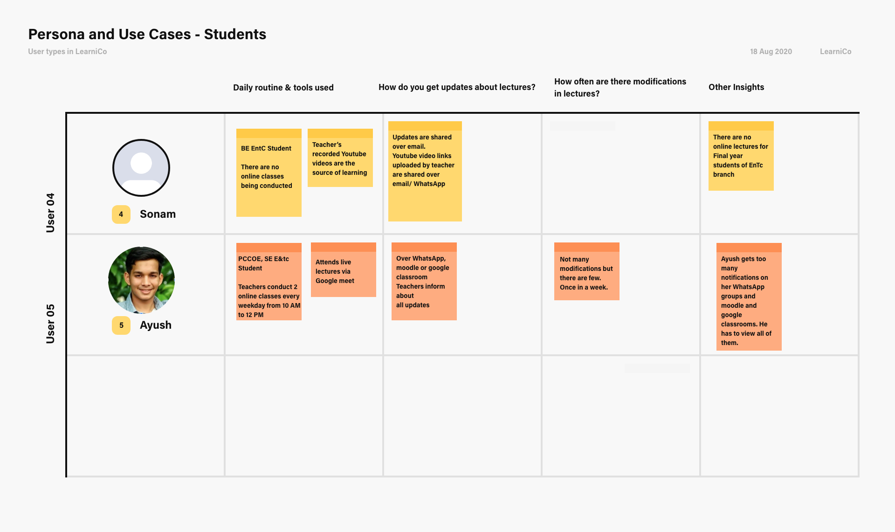
{kind=link}
{kind=link}
Empathy Maps
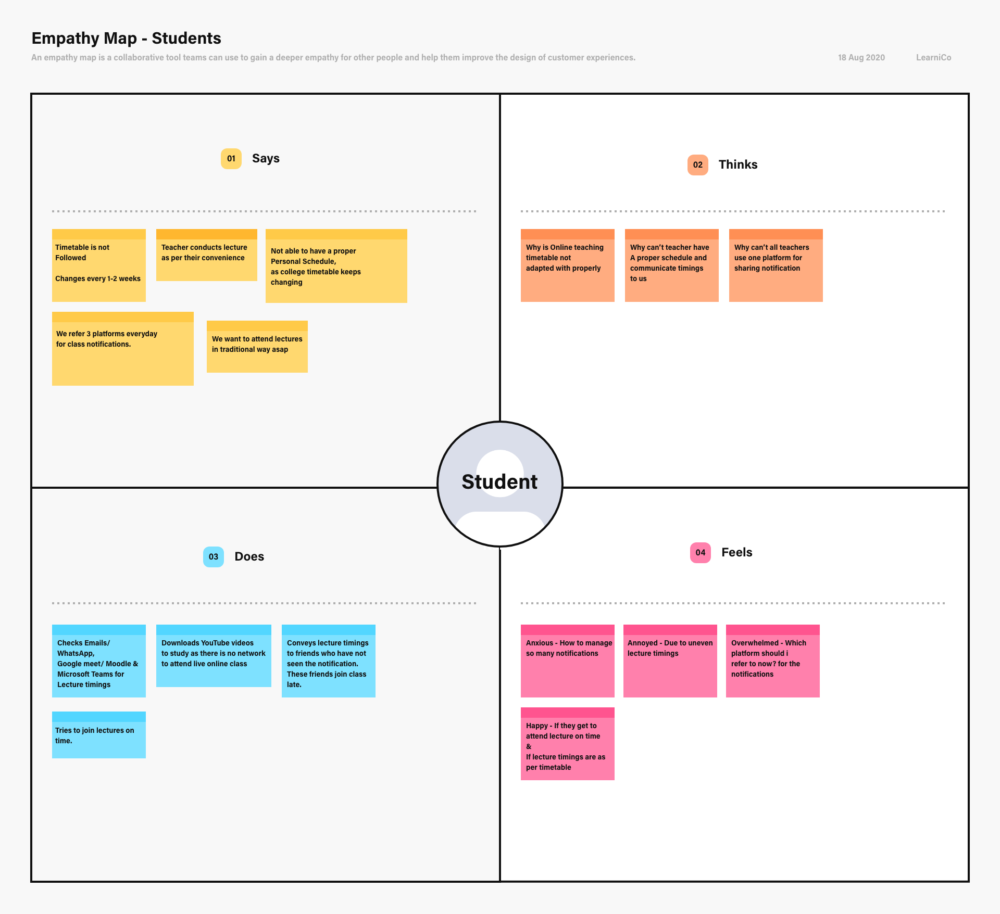
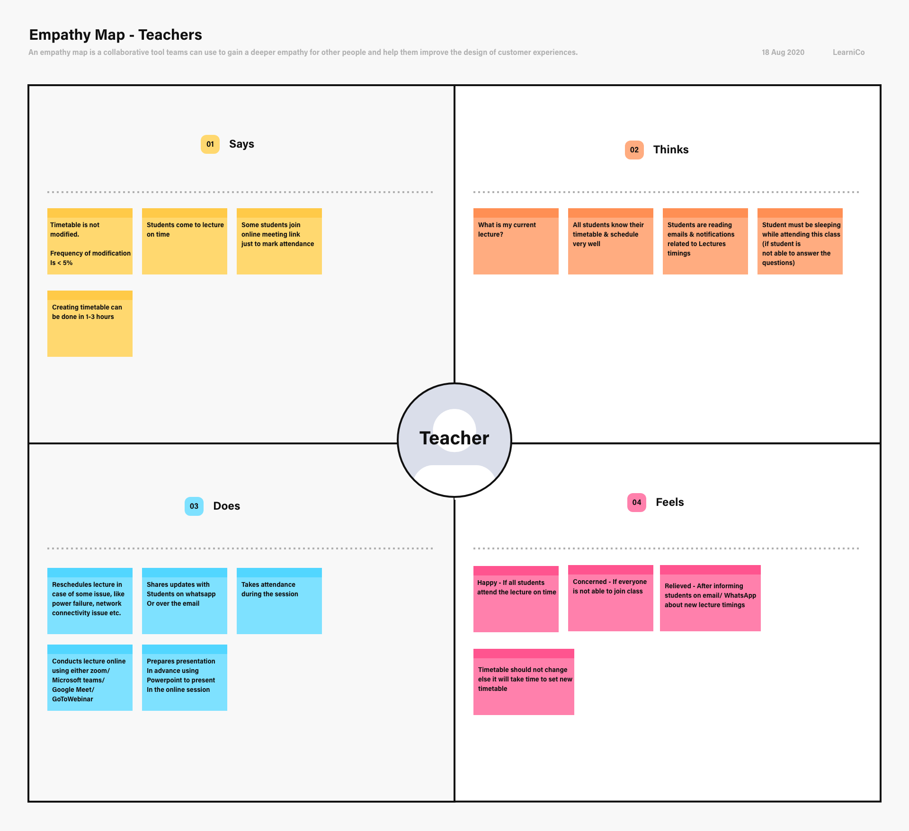
{kind=link}
{kind=link}
RESEARCH INSIGHTS
Teacher Insights
Frequent changes in lecture timings - Teachers said that there is < 5%
modification in timetable. What we came to know is the time table of the class was fixed
but the individual lecture timings kept changing. For teachers who taught from home,
there were cases of power failure/ low network/ at times teacher taught in a class for
more time to cleared student’s doubts and hence teachers had to reschedule lectures,
about which they informed students on various platforms like whatsApp/ email/ Microsoft
Teams /Google classroom.
Informing students about rescheduling lecture - Teachers are aware
that not all students see all platforms everytime. To make sure that students are
informed about the lecture timings and that they don’t miss out on any lecture,
teachers make it a point to convey the information of lecture timings on 2-3
different platforms. Most frequently used medium is WhatsApp & Google classroom,
other notification arises due to the notification settings in software tools like
Microsoft teams, Google meet, Goto Webinar.
Student Insights
Uneven lecture timings causing difficulty for students to adjust their
routine - Students raised concerns that their timetable changes every 2
weeks or sometimes every week. Because of uneven lecture timings they miss the
beginning of the lecture if they miss to read out the notification updated on
WhatsApp/email which is sent 10-15 mins before the rescheduled lecture . In this
case they are not able to understand topic properly as they join the lecture 10 mins
late.
Too many notifications for lectures, late joining of class and not
understanding topic - Students have to check notifications for
lectures on 2-3 different platforms. In case the rescheduled lecture timing is
shared 10-15 mins before the lecture, most students join the class late. Students
get lots of doubts as they miss the beginning of lecture in this scenario.
Referring recorded and offline content - Teachers share recorded
youtube video lectures for final year students, these students see the entire
content but they are not able to ask doubts to teacher, they call their friends and
ask doubts.
5 WHYs
Why do students feel that there are too many changes in
timetable?
Because when student makes themselves available for lecture and keeps it on priority, the lecture is not conducted at given time
Why?
Because teachers get busy with the previous class/ they have network issue/ power cut issues
Why?
Because teachers need to solve doubts of students Why?
So that students can get good marks
Why do students come late for lecture?
Because student did not read notification posted on different platforms
Why?
Because there are too many notification that student has to go through
Why?
Because teachers update lecture timings on different applications and automated notification emails are generated by tools
Why?
Because teacher doesn’t want student to miss out on any lecture
Why?
Because teacher wants student to score good marks, teacher’s performance report will be good.
Because when student makes themselves available for lecture and keeps it on priority, the lecture is not conducted at given time
Why?
Because teachers get busy with the previous class/ they have network issue/ power cut issues
Why?
Because teachers need to solve doubts of students Why?
So that students can get good marks
Why do students come late for lecture?
Because student did not read notification posted on different platforms
Why?
Because there are too many notification that student has to go through
Why?
Because teachers update lecture timings on different applications and automated notification emails are generated by tools
Why?
Because teacher doesn’t want student to miss out on any lecture
Why?
Because teacher wants student to score good marks, teacher’s performance report will be good.
IDEATION
Solving student's issues
We realised that if students get to attend the entire lecture and if their doubts
are cleared the cycle of rescheduling the lectures will reduce.
There is need to develop a new module which can show RECORDED lectures to
students, the recorded lectures can have provision to ask
doubts to entire class and get the doubts cleared.
Another major issue that needed to be resolved was that of too many
notifications, to solve this we thought of creating a central
place for student where they can see all their live classes and recorded
lectures along with the upcoming lectures, with this student will have
to refer only 1 application and get update about all their lectures.
Solving teacher's issues
Teacher can see all their lectures at one place and it will appear every time in the
dashboard so thatteacher will be primed with the lecture timings
and accordingly conduct classes resulting in no delay.
We decide to create timetable module where in teacher can
bulk upload lectures of all the classes or create single lectures
instances. This timetable module will also have filters for viewing
ongoing lectures in all classes that the teacher teaches. The provision for
rescheduling is also provided, as soon as
teacher reschedules or schedules a class, a notification will be shared with
the student, thus delaying the time for informing about the lecture or lecture
change. Teacher will get an alert count on the number of times a
lecture is rescheduled in a week. Along with this there will be alert given to the
teacher 10 mins before the start of next class so that teacher if teacher is already
in a class.
Teachers are also given an option to record lectures
in advance or record an ongoing lecture and share it with all students.
Students can view the lecture based on their feasibility and ask doubts.
PROTOTYPES
Teacher cloud platform
Teacher’s dashboard where teacher can see the details of their upcoming lecture
timings

On clicking lectures timetable view will be visible which will show option to
schedule lecture, print the timetable, apply filters to view teacher’s lecture in a
specific class or lectures of a class.
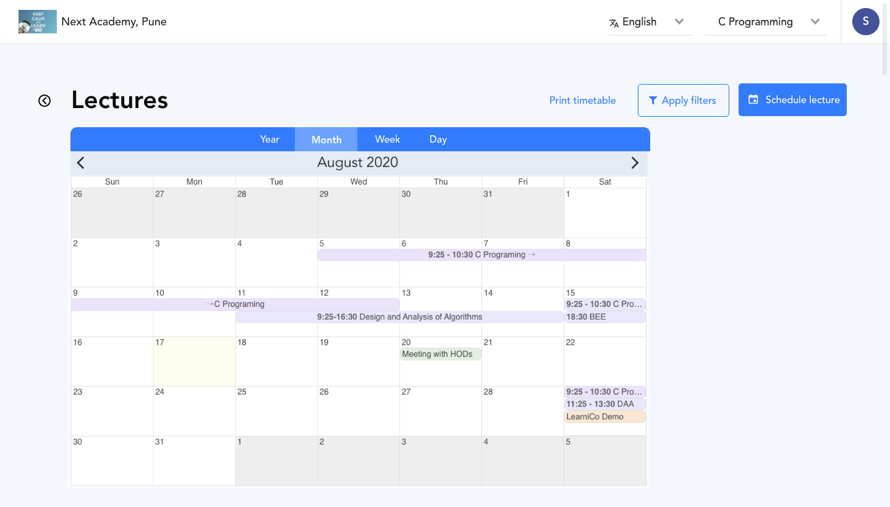
{kind=link}
Teacher can schedule individual lecture by clicking on the schedule lecture button
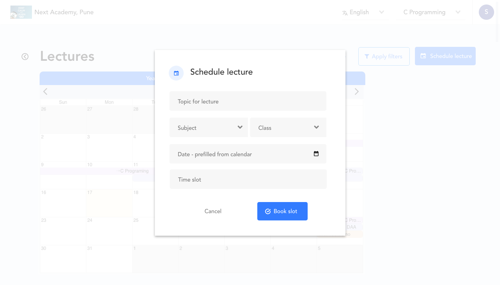
{kind=link}
Reschedule (red alert) feature is on hold as we are studying the emotions that this
feature might trigger in teachers, a separate research for this is being carried out
for this. This research includes if the reschedule event should be shown week
specific/ class specific/ frequency of changes in lecture occurrence week vs class
wise.

Provision to view timetable at teaching plan page, this will open the default view
of timetable calendar prefilled with data specific to respective class.
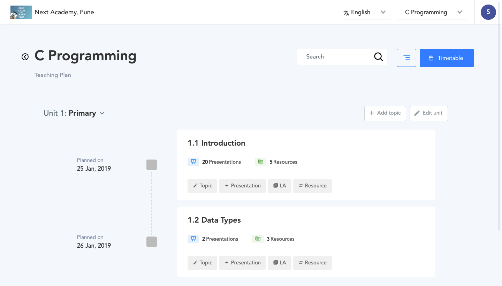
{kind=link}
New entry for timetable is added in the configuration page
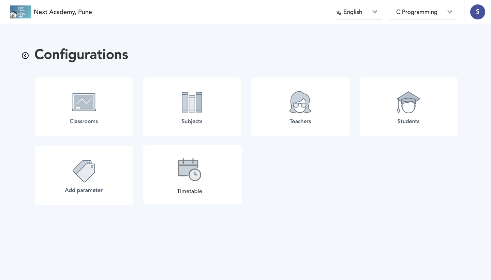
{kind=link}
Provision for bulk uploading timetable for all classes. This view is created for
initial easy onboarding, and seamless onboarding for every time the timetable is
changed.
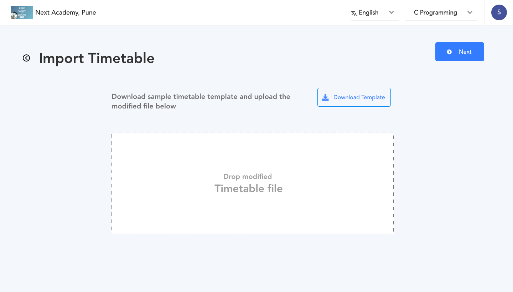
{kind=link}
Student mobile application
Student mobile app will enable students to view all the current live classes being
conducted in college and the upcoming classes that they can attend.
Later scope - In attendance module developed in LearniCo we have mapped students to
specific classrooms, so student will see only lectures and live classes specific to
their class.
{kind=link}
On clicking the timetable button, student sees the below view which informs them
about the day’s classes
{kind=link}
FEEDBACK
The timetable module is kept on hold and we started developing recording feature as
it is more in need. The feedback for timetable module will be taken in May 2021 from
teachers and students.
CONCLUSION
Students were more in need of the timetable feature than teachers. We realised there
was a need for developing a new feature Recordings, with which students can easily
view the lectures that they’ve missed or were unable to attend.
The recording feature also proved to be helpful for teachers as they could share
their lectures during institute inspection & accreditation activities.